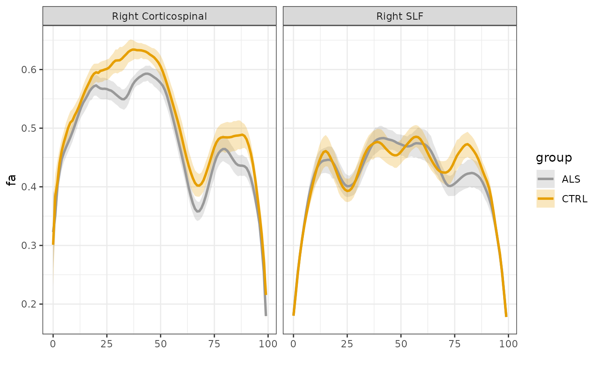
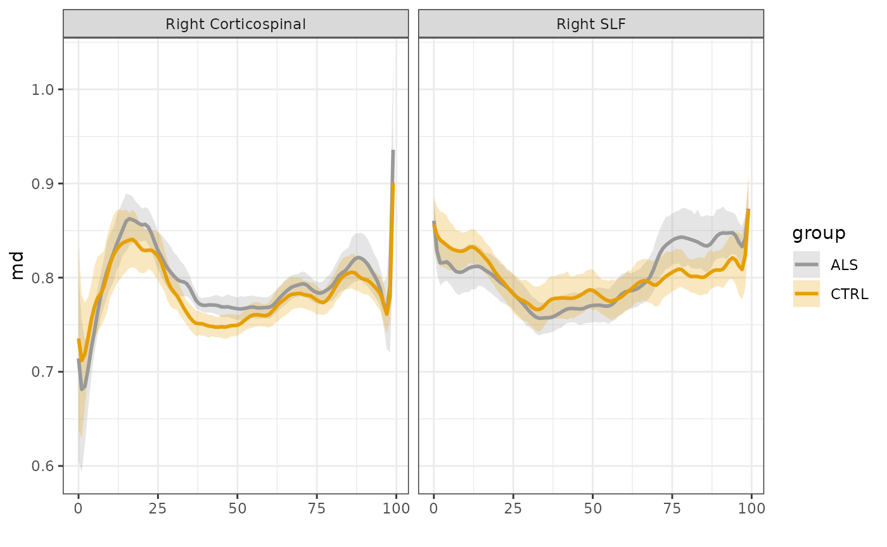

# SARICA
sarica <- tractr::read.afq.sarica()
sarica$group <- factor(sarica$class)
sarica$subjectID <- unclass(factor(sarica$subjectID))
tractr::plot_tract_profiles(sarica,
group_col = "group",
n_groups = 2,
metrics = c("fa", "md"),
bundles = list("Right Corticospinal",
"Right SLF"),
bundles_col = "tractID")
#> Warning: Removed 81 rows containing non-finite values (`stat_summary()`).
#> Removed 81 rows containing non-finite values (`stat_summary()`).
#> $fa
#> Warning: Removed 81 rows containing non-finite values (`stat_summary()`).
#> Removed 81 rows containing non-finite values (`stat_summary()`).
#>
#> $md
gam_fit_cst <- tractr_single_bundle(df_afq = sarica,
tract = "Right Corticospinal",
participant_id = "subjectID",
group_by = "group",
covariates = c("age", "group"),
dwi_metric = "fa",
k = "auto")
summary(gam_fit_cst)
#>
#> Family: Beta regression(113.72)
#> Link function: logit
#>
#> Formula:
#> fa ~ age + group + s(nodeID, by = group, k = 16) + s(subjectID,
#> bs = "re")
#>
#> Parametric coefficients:
#> Estimate Std. Error t value Pr(>|t|)
#> (Intercept) -0.148763 0.080666 -1.844 0.0652 .
#> age 0.001425 0.001305 1.092 0.2748
#> groupCTRL 0.138659 0.022209 6.243 4.66e-10 ***
#> ---
#> Signif. codes: 0 '***' 0.001 '**' 0.01 '*' 0.05 '.' 0.1 ' ' 1
#>
#> Approximate significance of smooth terms:
#> edf Ref.df F p-value
#> s(nodeID):groupALS 14.65 14.98 512.68 <2e-16 ***
#> s(nodeID):groupCTRL 14.60 14.97 569.00 <2e-16 ***
#> s(subjectID) 42.22 45.00 15.13 <2e-16 ***
#> ---
#> Signif. codes: 0 '***' 0.001 '**' 0.01 '*' 0.05 '.' 0.1 ' ' 1
#>
#> R-sq.(adj) = 0.793 Deviance explained = 80.1%
#> fREML = 6902.9 Scale est. = 1 n = 4734
gam_fit_slf <- tractr_single_bundle(df_afq = sarica,
tract = "Right SLF",
participant_id = "subjectID",
group_by = "group",
covariates = c("age","group"),
dwi_metric = "fa",
k = 40)
summary(gam_fit_slf)
#>
#> Family: Beta regression(139.688)
#> Link function: logit
#>
#> Formula:
#> fa ~ age + group + s(nodeID, by = group, k = 40) + s(subjectID,
#> bs = "re")
#>
#> Parametric coefficients:
#> Estimate Std. Error t value Pr(>|t|)
#> (Intercept) -0.325312 0.124762 -2.607 0.00915 **
#> age -0.000410 0.002019 -0.203 0.83906
#> groupCTRL 0.022559 0.034352 0.657 0.51139
#> ---
#> Signif. codes: 0 '***' 0.001 '**' 0.01 '*' 0.05 '.' 0.1 ' ' 1
#>
#> Approximate significance of smooth terms:
#> edf Ref.df F p-value
#> s(nodeID):groupALS 23.46 28.38 201.45 <2e-16 ***
#> s(nodeID):groupCTRL 24.02 28.99 197.16 <2e-16 ***
#> s(subjectID) 44.05 45.00 45.89 <2e-16 ***
#> ---
#> Signif. codes: 0 '***' 0.001 '**' 0.01 '*' 0.05 '.' 0.1 ' ' 1
#>
#> R-sq.(adj) = 0.745 Deviance explained = 76.8%
#> fREML = 7026 Scale est. = 1 n = 4785